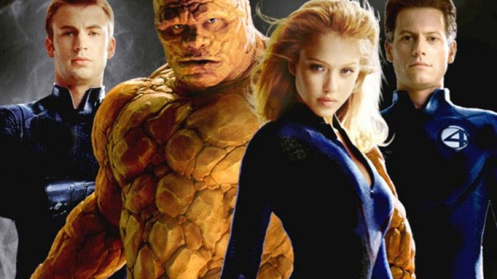

The Fantastic Four is a fictional superhero team
appearing in American comic books published by Marvel Comics. The group
debuted in The Fantastic Four, which helped to usher in a new level of
realism in the medium. The Fantastic Four was the first superhero team
created by editor/co-plotter Stan Lee and artist/co-plotter Jack Kirby,
who developed a collaborative approach to creating comics with this
title that they would use from then on.

Story
The Fantastic Four is a fictional superhero team appearing in American
comic books published by Marvel Comics. The group debuted in The
Fantastic Four #1 (cover dated Nov. 1961), which helped to usher in a
new level of realism in the medium. The Fantastic Four was the first
superhero team created by editor/co-plotter Stan Lee and
artist/co-plotter Jack Kirby, who developed a collaborative approach
to creating comics with this title that they would use from then on.
The four individuals traditionally associated with the Fantastic Four,
who gained superpowers after exposure to cosmic rays during a
scientific mission to outer space, are Mister Fantastic (Reed
Richards), a scientific genius and the leader of the group.
Origins
Apocryphal legend has it that in 1961, longtime magazine and comic
book publisher Martin Goodman was playing golf with either Jack
Liebowitz or Irwin Donenfeld of rival company DC Comics, then known as
National Periodical Publications, and that the top executive bragged
about DC's success with the new superhero team the Justice League of
America.[note 1] While film producer and comics historian Michael
Uslan has debunked the particulars of that story,[note 2] Goodman, a
publishing trend-follower, aware of the JLA's strong sales, did direct
his comics editor, Stan Lee, to create a comic-book series about a
team of superheroes. According to Lee, writing in 1974.
Characters
Mister Fantastic (Reed Richards), a scientific genius, can stretch,
twist and re-shape his body to inhuman proportions. Mr. Fantastic
serves as the father figure of the group, and is "appropriately
pragmatic, authoritative, and dull".[45]:19 Richards blames himself
for the failed space mission, particularly because of how the event
transformed pilot Ben Grimm.[45]:205 Stan Lee said the stretch powers
were inspired by DC's Plastic Man, which had no equivalent in
Marvel.[97] Invisible Girl/Invisible Woman (Susan Storm), Reed
Richards' girlfriend (and eventual wife) has the ability to bend and
manipulate light to render herself and others invisible. Stan Lee did
not want Sue to have superstrength, "to be Wonder Woman and punch
people", so eventually he came to invisibility, inspired by works such
as The Invisible Man.